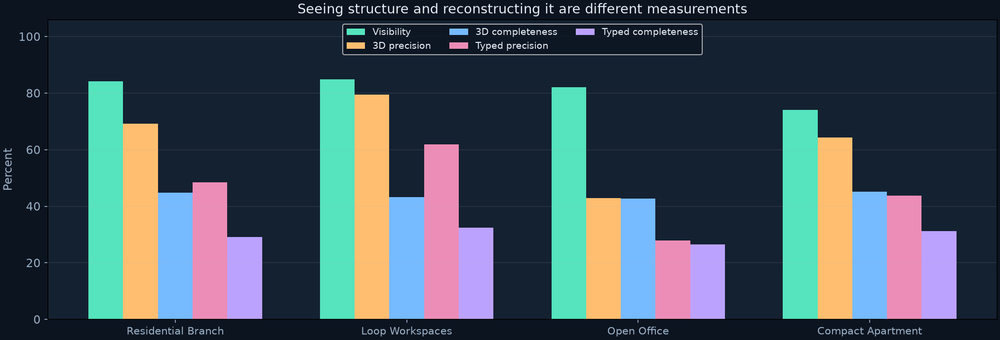
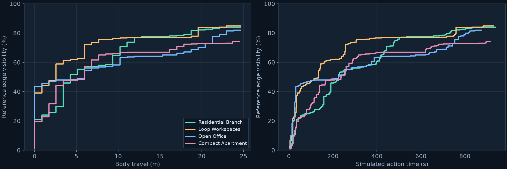

Four furnished development cases · ideal RGB-D · known poses
Start in one room. Look around, discover reachable passages, and grow a shared 3D map. Repeat the same experiment across branches, loops, broad offices and compact clutter.
In the original v1 suite below, the RGB edge checkpoint and frontier policy stay fixed across buildings. Each case has the same ceiling of __FRAME_BUDGET__ acquired images and __STATION_BUDGET__ local survey stations. The controller sees only acquired RGB-D, calibration and current map evidence; reference floor plans and room identities remain in the evaluator.
__BUILDINGS__Declared cases evaluated
__FRAMES__Total acquired images
__VISIBILITY__Macro architectural visibility
__COMPLETENESS__Macro 3D completeness @ 10 cm
These are development cases, not a held-out robustness benchmark. Entering all rooms is different from reconstructing all structure. Unknown and unobserved areas remain missing; the maps are partial observations, not completed building meshes.
Each row pairs an evaluator-only top-down with four acquired edge overlays. Colored camera triangles show their positions and directions. RGB views and predictions are recorded from the actual run, including errors.
02 / ACQUIRE, UPDATE, MOVE
Follow the original v1 explorations.
The replay shows acquired camera views, learned edges, observed navigation cells and accumulated 3D points. Map panels update after local sweeps. Playback compresses acquisition time; the humanoid proxy moves kinematically, without walking dynamics.
__CASE_CARDS__
03 / OBSERVED 3D GEOMETRY
Inspect what each run actually reconstructed.
Choose a building and available policy version, then drag or use arrow keys to orbit. Scroll or press +/− to zoom. The amber line is the recorded body path, and the white dot is its starting point. The point cloud contains acquired observations only.
Loading observed point data…
Surfaces are positioned using ideal simulated depth and known poses. Learned edges require the predicted visible and matching typed channels. Open apertures can remain as observed gaps; no door leaf or opening angle is inferred.
04 / DEVELOPMENT SUITE MEASUREMENTS
Separate visibility from reconstruction.
__FINDINGS__
Building
Rooms entered
Edge visibility
3D precision
3D completeness
Typed precision
Typed completeness
Frames
__CASE_ROWS__
All 3D scores use 10 cm tolerance. Visibility measures true architectural edge length seen by acquired cameras. Completeness measures reference edge length with nearby fused predictions; precision measures nearby reference segments for predicted voxels. Typed scores additionally require a matching wall/floor/ceiling/door/window channel. Seeing structure does not imply reconstructing it correctly.


Curves use the same visibility definition, but buildings differ in size, furnishings and connectivity. Action time counts simulated motion, local sweeps and settling; measured processing time appears in each case's details.
Aggregate with explicit denominators.
Measurement
Per-building macro
Macro denominator
Pooled weighted
Weighted denominator
__AGGREGATE_ROWS__
Macro averages give each evaluated building equal weight. Pooled visibility and completeness weight all reference architectural edge length, including unvisited regions. Pooled precision weights predicted edge voxels. Unavailable evaluations remain explicit missing rows and are excluded from measured aggregates; no unmeasured success or zero is invented.
More varied cases, with the same explicit assumptions.
Efficient, replayable experiments
The existing checkpoint is reused without training. Isaac Sim stays warm during each case and renders requested views on demand. Acquired predictions, decisions and map states remain available locally for replay and provenance checks.
The original single-room model benchmark and first connected-building experiment remain separate published results. This suite adds development layouts; it does not replace those measurements.
Partial structure and approximate movement
Known metric poses remove SLAM drift, and ideal depth avoids real sensor noise and missing returns. A loop-shaped layout does not establish traversal of every passage or SLAM loop closure. Navigation checks a horizontal footprint against observed free space; the reference audit checks architecture and approximate furniture boxes. Neither validates whole-body motion or a physical robot.
Further work needs held-out buildings, varied starts and repeats, pose uncertainty, realistic depth failures, dynamic objects and learned exploration comparisons. The humanoid proxy is an original approximate rig, not an official 1X model.